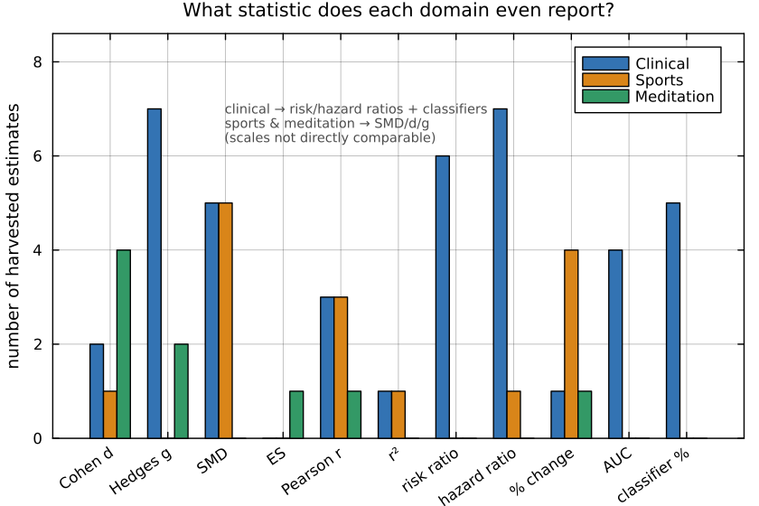
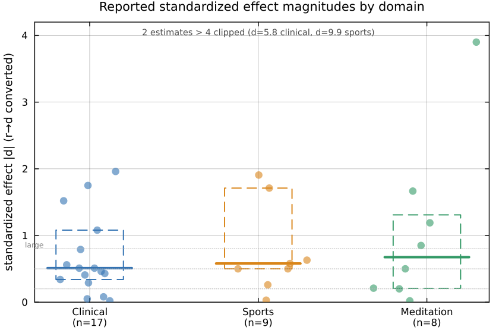

What do the reported effects look like? A meta-scientific view
Motivation
Every feature in HeartRateLab's measure zoo exists because someone published an effect: resting heart rate predicts mortality, RMSSD rises with vagal tone, DFA-$\alpha_1$ flattens before arrhythmic death. A feature's place in the literature is not the same as the quality of the evidence behind it. This page applies the standard publication-bias and p-hacking diagnostics to the HRV literature itself: given a harvested sample of reported effects, what do the distributions of effect sizes and p-values look like?
The tools come from the p-hacking-detection literature: the p-curve of Simonsohn, Nelson & Simmons 2014, which is right-skewed when significant results are evidential and bunched just below .05 when they are p-hacked, and the caliper and binomial tests of Elliott, Kudrin & Wüthrich 2022.
The sample is 153 study records harvested by a literature sweep that was instructed to find reported effects, so the sampling frame is itself a publication filter. The numbers below are a demonstration of the method on a small sample; only the tests explicitly marked as powered should be read as results.
The dataset
The harvest covered 12 HRV measure families (heart-rate level, RMSSD/pNN50, SDNN, LF/HF, ULF/VLF, Poincaré, geometric index, CSI/CVI, DFA, Hurst, ApEn/SampEn, other entropies) across the three application fields of the HRV knowledge base: clinical, sports and peak-performance, and contemplative practice (labeled clinical, sports, meditation in the CSV and tables below). Each record holds {variable, population, sample_size, direction, effect_size, p_value, doi, citation}. The flattened table is docs/zoo_gen/effect_stats.csv (202 rows: 153 study records plus 49 cohort-pull rows). Free-text effect sizes and p-values were parsed to a number plus a type (d, g, SMD, r, risk ratio, hazard ratio, percent change); unparseable records keep the raw string and a parsed=false flag.
| Quantity | Count |
|---|---|
| Study records | 153 |
| Parseable numeric effect size | 65 (42 %) |
| Parseable numeric p-value | 69 (45 %) |
of which exact (p = x) | 29 |
exact and significant (p < .05) | 21 |
p reported only as a bound (p < .01, p < .001) | 39 |
Only 29 of 153 records report an exact p-value. HRV papers overwhelmingly report an effect size with a confidence interval, or a bound like p < .001. That reporting style is good practice, but it starves the classic p-hacking tests, which need the exact location of a p-value relative to .05.
Different domains report different statistics

Clinical HRV is a risk/hazard-ratio literature (mortality, incident disease); sports and meditation are a standardized-mean-difference literature (pre/post, group contrasts). The scales are not directly comparable, so effect sizes are compared only within the standardized family.
Standardized effect magnitudes
Pooling the standardized estimates (d, g, SMD, ES, plus Pearson r converted via d = 2r/\sqrt{1-r^2}):

| Domain | n (standardized) | median |d| | note |
|---|---|---|---|
| Clinical | 17 | 0.51 | long right tail (one d of 5.8) |
| Sports | 9 | 0.58 | one extreme outlier (d of 9.9) |
| Meditation | 8 | 0.68 | includes a wrong-signed d of 3.9 |
The medians cluster around medium effects (d of 0.5 to 0.7), which is what a publication-filtered sample of reportable findings looks like: small studies survive to print only when they land a medium-or-larger effect. With 8 to 17 points per domain this is a descriptive comparison; the domains are statistically indistinguishable at this n.
The p-curve
Restricting to the 21 exact significant p-values and binning them in .01-wide steps gives the p-curve:

| p-curve (right-skew = evidential) | k (sig.) | share p < .025 | binomial p | Fisher p |
|---|---|---|---|---|
| Pooled (all domains) | 21 | 0.76 | 0.013 | 5.5e-5 |
| Clinical only | 11 | 0.82 | 0.033 | 6.8e-5 |
| Sports only | 5 | 0.80 | 0.19 | 0.032 |
| Meditation only | 5 | 0.60 | 0.50 | 0.39 |
The pooled and clinical curves pass the right-skew test decisively: the significant HRV results that report an exact p-value carry evidential value and show no p-hacking signature. Three qualifications apply. Pooling heterogeneous variables makes the pooled curve a literature-wide read rather than a test of a single claim. Only the clinical curve is individually powered; at k = 5 the flat meditation curve means no information, not evidence of a problem. And the p-curve sees only the 21 exact significant records; it says nothing about the 39 bounded p-values or the file drawer.
The caliper test cannot run at all: the window just below .05 contains 3 records. The absence of just-below-.05 p-values is itself informative. This literature reports p < .001 and confidence intervals far more often than a bare p = .048, the opposite of the reporting texture that makes p-hacking detectable.
Where the real problems are: sign disagreement, not p-hacking
The harvest surfaced a more serious class of problem than p-hacking: the literature disagrees with itself about the sign, and sometimes the meaning, of the effect. The workflow flagged bibliography inconsistencies in all 12 families. The three most consequential:
Pseudo-replication: SD1 is RMSSD. SD1 = RMSSD/\sqrt{2}; the Poincaré short-axis descriptor is mathematically identical to RMSSD (Ciccone et al. 2017). Much clinical and sports work nevertheless reports SD1 as a distinct nonlinear finding alongside RMSSD, inflating the apparent number of independent measures that moved.
The effect flips sign across studies. For meditation RMSSD, the pooled meta-analysis of Rådmark et al. 2019 found essentially no effect (Hedges g = 0.02, 95 % CI -0.44 to 0.49), while individual RCTs in the same harvest report large increases; pooled-null against individually-large is the classic small-study asymmetry pattern. For meditation heart rate, Pascoe et al. 2017 pool a decrease while Natarajan 2023 and a Kundalini-yoga study report the opposite. For entropy, most clinical work treats lower complexity as the disease marker, but Watanabe et al. 2015 found higher multiscale entropy at the VLF scale.
The construct itself is contested. The reading of LF/HF as sympathovagal balance is directly disputed in the mechanistic literature (Billman 2013). LF/HF was the single largest cell in the harvest (13 clinical records) yet contributed zero exact significant p-values: a heavily reported family whose numeric evidence, in this sample, is entirely confidence intervals and bounds.
Power audit
Of the 36 variable-family by domain cells, the largest:
| Family × domain | records | parsed effect | exact p | exact sig p | testable? |
|---|---|---|---|---|---|
| LF/HF × clinical | 13 | 12 | 0 | 0 | no |
| Poincaré × clinical | 9 | 3 | 1 | 1 | no |
| Other-entropy × clinical | 8 | 5 | 4 | 4 | no |
| SDNN × clinical | 7 | 5 | 1 | 1 | no |
| ULF/VLF × clinical | 7 | 4 | 0 | 0 | no |
| DFA × clinical | 6 | 1 | 0 | 0 | no |
| RMSSD × meditation | 6 | 1 | 3 | 2 | no |
No cell reaches the pre-registered threshold of at least 8 independent exact significant p-values, so no cell-level p-curve or caliper is run. The only tests reported are the pooled and clinical p-curves above.

One cell in the map is well-powered for a real distributional test: resting heart rate and all-cause mortality, extracted at the level of the individual cohorts inside the two large dose-response meta-analyses. That pull was done and is analyzed next.
Well-powered case: resting HR and mortality (funnel / Egger)
Cohort-level relative risks (adjusted, per 10 bpm resting HR, all-cause mortality) were read directly from the two meta-analyses:
- Zhang, Shen & Qi 2016, CMAJ: 35 of 46 cohorts, read numerically off the Figure 1 forest plot (the linear per-10-bpm subset; the remaining cohorts contributed only to the cardiovascular-mortality estimate or to categorical exposure contrasts).
- Aune et al. 2017: 14 of 87 cohorts, restricted to those reporting a continuous per-X-bpm RR directly (rescaled to per 10 bpm assuming log-linearity), plus the Tromsø Study cohorts fitted from their published dose-response points.
The two meta-analyses draw on a heavily overlapping pool of primary cohorts. Every cohort found in both sources was de-duplicated (keeping the direct Zhang read) so that Egger's test is not run on the same primary cohort twice. Categorical-only entries were excluded rather than back-solving trends from quantile contrasts. Net: 49 independent cohort-level estimates.

| Test | Statistic | Result |
|---|---|---|
| Random-effects pooled RR (per 10 bpm) | 1.115 (95% CI 1.092-1.139), I² = 95.2 % | |
| Egger's regression intercept | 2.90 (SE 0.87) | p = 0.0016 |
| Begg's rank correlation | Kendall's τ = 0.23 | p = 0.020 |
| Trim-and-fill (L0 estimator) | 15 studies imputed | adjusted RR 1.068 (95% CI 1.045-1.091) |
Bias is indicated. The Egger intercept is significantly positive (smaller, less precise cohorts report systematically larger RRs), Begg's rank correlation agrees, and trim-and-fill pulls the pooled per-10-bpm RR from 1.115 down to 1.068. The direction survives the correction; the magnitude does not.
This converges with the source papers' own analyses:
| Analysis | Egger p | Begg p | Trim-and-fill adjustment |
|---|---|---|---|
| This page (49 deduplicated cohorts) | 0.0016 | 0.020 | RR 1.115 to 1.068 (1.045-1.091) |
| Zhang et al. 2016 (46 cohorts) | < 0.01 | RR 1.09 to 1.04 (1.02-1.06) | |
| Aune et al. 2017 (48 estimates) | 0.93 (ns) | 0.02 | RR 1.17 to 1.13 (1.11-1.16) |
All three land in the same place: a real positive association whose naive pooled estimate is inflated by roughly 20 to 30 % relative to the corrected one. Aune's null Egger test reflects a different cohort composition (trends derived via their full dose-response regression) rather than a contradiction; Begg's test agrees with this page in both cases.
Two scope limits frame this result. The 49 cohorts are already inside two published meta-analyses, so the test detects small-study asymmetry within that assembled synthesis, not publication bias across the unpublished universe of resting-HR studies. And the 49-of-133 coverage is gated on which cohorts reported a linear per-X-bpm RR directly, a reporting-style filter that could itself correlate with study size or era.
Reproducibility: the dataset is regenerated by parsing the applications-workflow journal into docs/zoo_gen/effect_stats.csv; the first four figures are rendered headless (Plots.jl + GR, GKSwstype=100) into docs/src/usecases/figs/. p-curve and caliper statistics follow Simonsohn et al. 2014 and Elliott et al. 2022. Cohort rows for the resting-HR pull are tagged source=cohort-pull in effect_stats.csv; the funnel figure is rendered with matplotlib/Agg. Egger, Begg, and trim-and-fill follow Duval & Tweedie 2000 (L0 estimator).